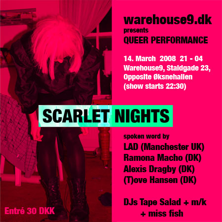
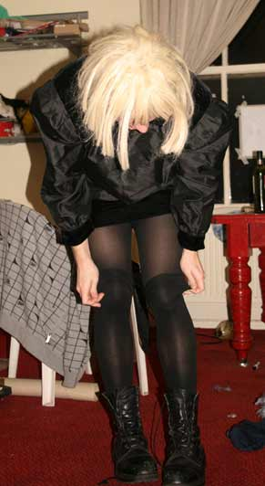
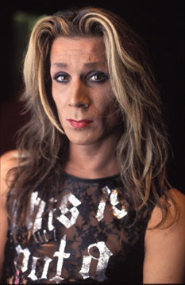
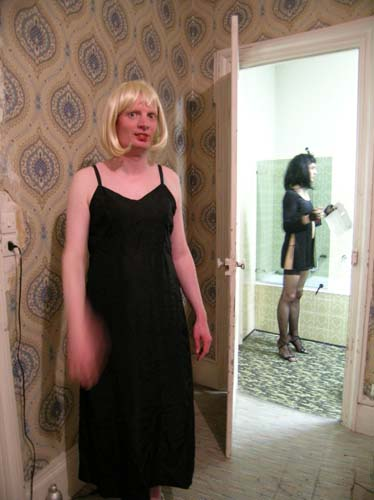

| dunst Recommends: |
14. Marts - 2008 |
QUEER PERFORMANCE
kl. 21 - 04 //Show kl:22:30 //
Entry: 30DKK
>> Dansk Tekst
|

WAREHOUSE9.DK presents
QUEER PERFORMANCE & DJs tape salad + m/k + miss fish
HOST Christian Van Schijndel
DATE Fredag d. 14. Marts 2008
TME 21 – 04 show kl. 22:30
ENTRÉ 30,- DKK
ADDRES
warehouse9, staldgade 23
(Opposite Øksnehallen)
1699 københavn V
INFO warehouse9.dk
|
SCARLET NIGHTS
spoken word debut performance by
LAD (Manchester UK)
www.myspace.com/slide_in
Liam Doherty (born 1988) is a performance artist and a student from
dept. of Fine Art at the University of Salford, UK.
Scarlet
nights was a piece of writing i did when i was 18, it was a personal
fantasy world i created about sexual discovery and someone taking you
to another world but for one night.
|

|
RAMONA MACHO (DK)
reading (in Danish)
www.myspace.com/ramonamacho
Ramona is known for noumerous performancse as a solo artist and with dunst.
She will read from her goldmine of lust, exitement and self exploration in "The diary of a Tranny Nymphomaniac ".
|
|
ALEXIS (DK)
Monologue (in English)
www.myspace.com/alexiswerewolf
Alexis is Copenhagens longest going electro-house diva and tranny DJ.
What few people knows is that she is also a talented storyteller when
she gives account of episodes with people she meets on her way - such
as the monologues "Strip searched" or "Where is a policeman when you
need one".
Even though the actual story for this event is still a secret, we can
be sure it will be delivered with a sharp tounge and wit.
|

|
(T)OVE HANSEN (DK)
performance (in Danish)
tovehansendrag.dk
(T)ove Hanse on stage is a unique and delightful experience.
Expect a funny, personal and intimate performance.
|

|
|
WAREHOUSE9.DK præsenterer
QUEER PERFORMANCE & DJs tape salad + m/k + miss fish
VÆRT Christian Van Schijndel
DATO Fredag d. 14. Marts 2008
TID 21 – 04 show kl. 22:30
ENTRÉ 30,- DKK
ADRESSE
warehouse9, staldgade 23
(overfor indgangen til øksnehallen)
1699 københavn V
INFO warehouse9.dk
PROGRAM 22:30
|
SCARLET NIGHTS
spoken word debut performance by
LAD (Manchester UK)
www.myspace.com/slide_in
Liam Doherty (født 1988) er performance kunstner og studerer Fine Art ved University of Salford i England.
"Scarlet
nights" (Skarlagenrøde nætter") er et stykke jeg skrev, da jeg var 18
år. Jeg skabte en personlig fantasiverden om seksuel opdagelse og om en
der tager dig til en anden verden – men kun for én nat !
sprog: ENGELSK
|
|
RAMONA MACHO (DK)
læser (Dansk)
www.myspace.com/ramonamacho
Ramona
Macho er kendt fra hendes utallige soloperformance og shows med
performancegruppen "dunst". Denne aften vil hun læse op fra sin
guldmine af lyst, spænding og selvudforskning i romanen "Bukkake
Breakfast – Transnymfomaniske bekendelser"
|
|
ALEXIS (DK)
Monolog (Engelsk)
www.myspace.com/alexiswerewolf
Alexis
er kendt for at være den mest autentiske electro-house diva og tranny
DJ i København med både pladeudgivelser og store DJ jobs bag sig.
Hvad få mennesker ved, er at hun faktisk også er en forrygende
historiefortæller, når hun fortæller om episoder fra sit liv, såsom
"Strip Search" og "Hvor er der en strømer, når man har brug for en ?".
Selvom det endnu er hemmeligt, hvad hun vil fortælle om denne aften,
kan vi med sikkerhed sige at den vil blive leveret med humor og en
skarp tunge.
|
|
(T)OVE HANSEN (DK)
performance (Dansk)
tovehansendrag.dk
(T)ove Hanse shows er en unik og vidunderlig oplevelse.
Forvent et humoristisk, personligt og intimt indslag.
|
|